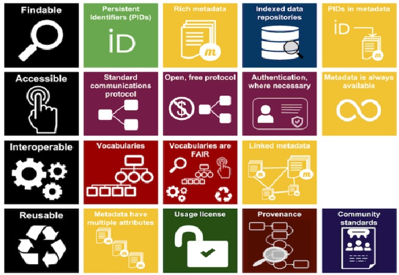

5.2 Principios FAIR: Datos, Metadatos e infraestructura digital.
Los principios de almacenamiento FAIR (Findable, Accessible, Interoperable, Reusable), son ampliamente reconocidos a nivel mundial. Estos principios han sido promovidos por organizaciones científicas regionales como CILAC (Ramírez and Samoilovich 2019) y Europeas (EC 2016). En Chile ANID del ministerio de ciencias, ha señalado la política de acceso a datos que impulsará se guiara por los principios FAIR.
Los principios FAIR, son sumamente compatibles con las diversas formas de información producida por las ciencias sociales, ya sean documentos de texto, audiovisuales o bases de datos. Este es un buen motivo para fomentar los principios FAIR en todos los tipos de investigaciones en ciencias sociales.
El objetivo general de estos principios es que los productos de investigación estén disponibles en la web, de modo tal que puedan ser buscados directamente por investigadores o por inteligencia artificial (FAIR 2020). A continuación, se explican estos principios y como pueden ayudar a las ciencias sociales.

Los principios se refieren a tres tipos de entidades: “datos” (o cualquier producto de investigación como objeto digital), “metadatos” (información sobre ese objeto digital) e infraestructura digital (Capacidades y herramientas necesarias en repositorios web).
5.2.1 Findable (“Encontrables”)
El primer paso para (re) usar datos es encontrarlos. Los metadatos y los datos deben ser fáciles de encontrar tanto para humanos como para computadoras. Los metadatos legibles por máquina son esenciales para el descubrimiento automático de conjuntos de datos y servicios, por lo que este es un componente esencial del proceso de FAIRification .
F1. A los datos se les asigna un identificador único y persistente a nivel mundial.
Los identificadores únicos eliminan la ambigüedad, facilitando que una investigación, una base de datos o cualquier producto de investigación, no sea confundido con otro producto por tener un nombre o características similares.
Los ejemplos más comunes de identificadores son los URL (Localizador Uniforme de Recursos) los cuales asignan un sitio único a cada página web, como los URL “www.google.com” o “www.youtube.com”. Otro tipo de identificadores más cercano a las ciencias sociales son los ISBN (Número Internacional Normalizado del Libro) o el DOI (Identificador de Material Digital) que solemos ver asociados a los artículos de investigación. A diferencia del URL el doi no cambia, aunque el material cambie de ubicación en la web. Así, los identificadores se asocian de forma única a los datos (Bases de datos, entrevistas, transcripciones), como es el ejemplo de este doi https://doi.org/10.5064/F6HTXF0H que corresponde al identificador de un conjunto de materiales y Focus Groups sobre género y participación en el desarrollo comunitario en Senegal.
Estos identificadores también ayudarán a que el trabajo sea más fácilmente compartido, reconocido y posea un mayor impacto. En la misma línea, facilita su citación puesto que, al ingresar estos identificadores en gestores de citas como Zotero, se genera una referencia bibliográfica automática.
Para generar un identificador único se pueden usar paginas especializadas que pueden encontrarse en DoiChile. También, para facilitar el trabajo, muchos repositorios de datos generarán automáticamente identificadores persistentes y únicos a nivel mundial para los conjuntos de datos depositados.
F2. Los datos se describen con metadatos enriquecidos (definidos por R1 a continuación)
Los metadatos son información sobre los datos. Los archivos comunes poseen metadatos automáticos, por ejemplo, Word registra el creador y la fecha. Los principios FAIR, señalan la importancia de incluir metadatos generosos y extensos, incluida información descriptiva sobre el contexto, la calidad y condición, o las características de los datos. En ciencias sociales es importante entregar información sobre la muestra y el proceso de recopilación de datos, así como cualquier información útil para que el investigador que recurra a ellos pueda tomar decisiones correctas.
F3. Los metadatos incluyen de forma clara y explícita el identificador de los datos que describen
Junto con los identificadores y los metadatos para que los datos sean fáciles de encontrar es necesario que se encuentren disponible en algún recurso de búsqueda. Google es el recurso de búsqueda más conocido. Para los datos de ciencias sociales es importante que estas bases de datos se encuentren disponibles en buscadores de instituciones de investigación o bibliotecas.
F4. Los datos y metadatos se registran o indexan en un recurso de búsqueda
Junto con los identificadores y los metadatos para que los datos sean fáciles de encontrar es necesario que se encuentren disponible en algún recurso de búsqueda. Google es el recurso de búsqueda más conocido. Para los datos de ciencias sociales es importante que estas bases de datos se encuentren disponibles en buscadores de instituciones de investigación o bibliotecas.
5.2.2 Accesibles
A1. Los datos y metadatos son recuperables por su identificador utilizando un protocolo de comunicaciones estandarizado
Esto significa que los identificadores permiten la redirección a una página web especifica que contiene los datos, esto se puede ver en el identificador cuando posee un http al comienzo. De este modo, basta con poner identificador en la barra del navegador para poder acceder a la página de los datos mediante solo “un click”.
A1.1 El protocolo es abierto, gratuito y de implementación universal
Este sub-punto refiere a que la forma en que se puede acceder a la pagina web mediante el identificador es universal, es decir, cualquier persona con un computador e internet puede acceder. Lo contrario a esto sería dejar el documento en un sitio web que sea pagado o que no esté disponible a nivel mundial.
A1.2 El protocolo permite un procedimiento de autenticación y autorización, cuando sea necesario
Además, el modo por el cual se accede a los datos mediante el identificador puede tener algunas solicitudes o exigencias para el usuario. Así, FAIR, no es sinónimo de OpenData, pues se puede tener un dato altamente restringido por distintas razones, pero si se especifican bien las condiciones para su acceso, entonces un dato no “abierto” puede ser FAIR.
A2 . Los metadatos son accesibles, incluso cuando los datos ya no están disponibles
Suele ocurrir que los datos en internet desaparecen por que mantenerlos implica un costo. Este punto señala como necesario que pese a que desaparezcan los datos los metadatos, que son más fáciles y económicos de almacenar, deben ser persistentes, es decir, deben mantener su existencia en la web.
5.2.3 Interoperables
Los datos normalmente deben integrarse con otros datos. Además, los datos deben interoperar con distintas aplicaciones o flujos de trabajo para análisis, almacenamiento y procesamiento. Para que esto sea posible, es necesario que los datos se encuentren en formatos que sea legibles y trabajables por distintos softwares.
i1. Los datos y metadatos utilizan un lenguaje formal, accesible, compartido y de amplia aplicación para la representación del conocimiento.
Para que los datos puedan ser encontrados por las herramientas como barras de búsqueda es necesario que los términos utilizados en los metadatos para describir el estudio sean parte de un Vocabulario controlado, los cuales sirven para sistematizar los sinónimos dentro de un campo temático (Collins 2015). Esto permite que al buscar un término por ejemplo “relaciones de pareja” en un repositorio de materiales de investigación también aparezcan aquellos materiales que descritos con el término “noviazgo”. Los vocabularios controlados utilizados por repositorios de investigación suelen ser denominados también tesauros u ontologías.
Además es necesario que los metadatos esten estructurados en base a esquemas comunes. Al respecto existen múltiples modos de organizar los metadatos como DDI, Dublin Core, JSON, entre otros. Sin la intención de profundizar en el tema es necesario señalar que no existen amplios consensos en el uso de un estándar de metadatos en Ciencias sociales y humanidades (Gómez, Méndez Rodríguez, and Hernández Pérez 2016), por lo cual se considera adecuado que un repositorio permita almacenar los metadatos en distintos formatos.
i2. Los datos y metadatos usan vocabularios que siguen los principios FAIR
Es importante que los vocabularios controlados utilizados para la descripción de los datos sigan principios FAIR, es decir, posean identificadores y metadatos adecuados para poder localizar el vocabulario controlado al que se hace referencia.
Un ejemplo de vocabulario controlado que sistematiza los sinónimos de distintos idiomas para “journal article” se puede encontrar aquí. Este ejemplo cumple en buena medida con los principios FAIR
i3. Los datos y metadatos incluyen referencias calificadas a otros datos y metadatos
Los datos y la información referida a ellos deben tener múltiples vínculos web que permitan acceder a información asociada. Por ejemplo, si tenemos una investigación que ha utilizado datos de una encuesta publicada, se debe hacer alusión a dicha encuesta a partir de su identificador. Del mismo modo se puede hacer vínculos con instituciones asociadas, o páginas de proyectos de investigación propias o estatales.
5.2.4 Reutilizables
El objetivo final de la feria es optimizar la reutilización de los datos. Para lograr esto, los metadatos y los datos deben estar bien descritos para que puedan replicarse y / o combinarse en diferentes entornos.
R1. Los datos y metadatos se describen detalladamente con una pluralidad de atributos precisos y relevantes
Para que un usuario decida si utilizar los datos o no, debe contar con una gran cantidad de información detallada. Este punto es similar a F2 (Metadatos suficientes), pero destaca la importancia de información particular del campo de uso. Para ello, en ciencias sociales, es importante describir cuando fue realizada la muestra, a quienes se le aplica, si posee control de variables experimentales, entre otras informaciones relevantes. Se debe señalar la mayor información posible, incluyendo tipo de muestreo, intención de la creación de la base de datos, entre otros. Esta información debe ser plural para fomentar el uso más allá de las ciencias sociales.
R1.1. Los datos y metadatos se publican con una licencia de uso de datos clara y accesible
Los datos deben ser publicados con una licencia que permita su reutilización. Se recomienda en general utilizar licencias Creative Commons, estas licencias permiten a los dueños de los materiales dejar a libre disposición los datos producidos, aunque señalando aquellas condiciones en las cuales se pueden utilizar y aquellas en que no. Esta es una condición más legal que técnica para la reutilización de los datos.
R1.2. Los datos y metadatos están asociados con la procedencia detallada
Este punto refiere a entregar información sobre los productores y el flujo de trabajo. También en este punto se debe destacar como se debe citar la base de datos. Entonces, se deben responder las siguientes preguntas ¿Quien estuvo a cargo del diseño? ¿Quién a cargo del terreno y la aplicación? ¿Quién edito los datos? ¿Cómo desea que este material este referenciado?
R1.3 . Los datos y metadatos cumplen con los estándares comunitarios relevantes para el dominio
Los datos y los metadatos deben estar nombrados y ordenados de modo coherente con los estandares de las ciencias sociales. Por ejemplo, las bases de datos deben estar estructuradas de tal modo que los sujetos sean las filas y las variables las columnas. La documentación que se entrega esta nombrada con terminos comunes, como manual de usuario o cuestionario.
Segun la investigación de Gómez, Méndez Rodríguez, and Hernández Pérez (2016), el esquema metadatos más utilizados en las ciencias sociales es el de DDC. No obstante, existe una gran divergencia respecto a cuales deben ser los metadatos incluidos.

References
Collins, Candice. 2015. “Social Science Data & Controlled Vocabulary (LIS6711) - LibraryGirlMiami.” https://sites.google.com/site/librarygirlmiami/social-science-data-archiving-controlled-vocabulary.
EC. 2016. “FAIR Data Management in Horizon 2020.”
FAIR, GO. 2020. “FAIR Principles.” GO FAIR. https://www.go-fair.org/fair-principles/.
Gómez, Nancy Diana, Eva María Méndez Rodríguez, and Antonio Hernández Pérez. 2016. “Datos y metadatos de investigación en ciencias sociales y humanidades: una aproximación desde los repositorios temáticos de datos,” August.
Ramírez, Paola, and Daniel Samoilovich. 2019. “Ciencia Abierta. Reporte Para Tomadores de Decisiones.”